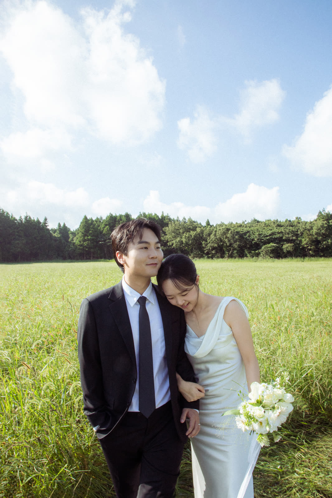

<meta charset="utf-8">
<meta name="viewport" content="width=device-width, initial-scale=1, viewport-fit=cover">
<title>진용·하림 청첩장</title>
<meta name="claude:viewport-fit-sides" content="cover">
<link rel="preconnect" href="https://fonts.googleapis.com">
<link rel="preconnect" href="https://fonts.gstatic.com" crossorigin>
<link href="https://fonts.googleapis.com/css2?family=Archivo:wght@500;700;800&family=Noto+Sans+KR:wght@400;500;700&display=swap" rel="stylesheet">
<style>
  /* Layout: one white sheet; a left-aligned sentence headline, a crayon greenhouse that fills with plants, big date numerals.
     Single look on purpose (a printed card on white stock), so no dark theme. */
  :root {
    color-scheme: light;
    --paper: #fbfbf8;
    --ink: #161616;
    --soft: #4d4d4a;
    --latin: 'Archivo', 'Helvetica Neue', Arial, sans-serif;
    --korean: 'Noto Sans KR', 'Apple SD Gothic Neo', sans-serif;
  }

  body {
    background: var(--paper);
    color: var(--ink);
    font-family: var(--korean);
  }

  .card {
    min-height: 100svh;
    box-sizing: border-box;
    max-width: 440px;
    margin: 0 auto;
    padding-left: max(24px, env(safe-area-inset-left, 0px));
    padding-right: max(24px, env(safe-area-inset-right, 0px));
    padding-block: 44px 40px;
    display: flex;
    flex-direction: column;
    position: relative;
  }

  /* Live weather layer: drawn over the greenhouse, under the title and the date. */
  .weather {
    position: absolute;
    inset: 0;
    width: 100%;
    height: 100%;
    pointer-events: none;
    z-index: 2;
  }

  .card > .house {
    position: relative;
    z-index: 1;
  }

  .card > .title,
  .card > .details {
    position: relative;
    z-index: 3;
  }

  /* Title: two lines around a shared center: rings on the first, the ampersand on the second. */
  .title {
    margin: 0;
    display: grid;
    grid-template-columns: minmax(0, 1fr) auto minmax(0, 1fr);
    align-items: center;
    column-gap: 0.28em;
    font-family: var(--latin);
    font-weight: 500;
    /* Two of the widest side words (INVITATION) plus the middle column come to about 12.6em. */
    font-size: clamp(20px, calc((100vw - 48px) / 12.6), 33px);
    line-height: 1.18;
    letter-spacing: -0.035em;
  }

  .glyph {
    display: inline-block;
    width: 1.25em;
    height: 0.95em;
    margin: 0 0.04em;
    vertical-align: -0.12em;
  }

  .glyph--wide {
    width: 1.6em;
  }


  /* Three columns across the full width: outer words sit flush against the left and right edges,
     so both lines share the same edges, and the rings and the ampersand share the center axis. */
  .title__left,
  .title__right,
  .title__mid {
    white-space: nowrap;
  }

  .title__left {
    justify-self: start;
  }

  .title__right {
    justify-self: end;
  }

  .title__mid {
    justify-self: center;
  }

  /* First line spans all three columns, centered on the same axis as the rings. */
  .title__head {
    grid-column: 1 / -1;
    justify-self: center;
    white-space: nowrap;
  }

  /* Names are set smaller than the title so the second line reads as a caption under it. */
  .title__names {
    margin-top: 0.5em;
    font-size: 0.68em;
    letter-spacing: -0.02em;
  }

  /* Pull the two names in toward the rings, by the same amount on each side, so the row ends
     where WEDDING INVITATION ends. */
  .title__left.title__names {
    margin-left: 1.5em;
  }

  .title__right.title__names {
    margin-right: 1.5em;
  }

  /* Each name is a small stack: the English name with its Korean name centered beneath it. */
  .name {
    display: inline-grid;
    justify-items: center;
  }

  .name__ko {
    margin-top: 0.5em;
    font-family: var(--korean);
    font-size: 0.62em;
    font-weight: 500;
    letter-spacing: 0;
    color: var(--soft);
  }

  /* The rings sit at the vertical middle of the English and Korean names together. */
  .title__amp {
    align-self: center;
    width: 1.85em;
    height: 1.41em;
  }

  /* Rings with a soft twinkle: two four-point glints over the stone and the right ring. */
  .ring {
    position: relative;
    display: block;
  }

  .ring__art {
    display: block;
    width: 100%;
    height: 100%;
    margin: 0;
  }

  .ring__spark {
    position: absolute;
    left: 30%;
    top: 4%;
    width: 0.62em;
    height: 0.62em;
    /* Gold glint with a bright core, so it shows on the white paper. */
    background: radial-gradient(circle, #fffbe6 0 14%, #f3cf62 30%, #d4a23a 52%, rgba(212, 162, 58, 0) 74%);
    clip-path: polygon(50% 0, 60% 40%, 100% 50%, 60% 60%, 50% 100%, 40% 60%, 0 50%, 40% 40%);
    opacity: 0.85;
    pointer-events: none;
  }

  .ring__spark--small {
    left: 74%;
    top: 34%;
    width: 0.42em;
    height: 0.42em;
    opacity: 0.75;
  }

  @media (prefers-reduced-motion: no-preference) {
    .ring__spark {
      animation: twinkle 2.6s ease-in-out infinite;
    }

    .ring__spark--small {
      animation-delay: 1.3s;
    }
  }

  @keyframes twinkle {
    0%, 100% {
      opacity: 0;
      transform: scale(0.3) rotate(0deg);
    }

    45% {
      opacity: 1;
      transform: scale(1) rotate(25deg);
    }

    70% {
      opacity: 0;
      transform: scale(0.5) rotate(45deg);
    }
  }


  .house {
    flex: 1;
    min-height: 300px;
    display: grid;
    place-items: center;
    margin-block: 14px;
  }

  .house canvas {
    display: block;
    width: min(100%, 350px);
    max-width: 100%;
    aspect-ratio: 1 / 1.02;
    cursor: pointer;
  }

  /* The date is the second big moment: large numerals on the left, the rest set small beside them. */
  .details {
    display: flex;
    align-items: flex-end;
    justify-content: space-between;
    gap: 16px;
  }

  /* The year over the day, both the same size and weight in the title's face. */
  .details__date {
    margin: 0;
    font-family: var(--latin);
    font-weight: 500;
    font-size: clamp(22px, 6.4vw, 26px);
    line-height: 1.08;
    letter-spacing: -0.02em;
    font-variant-numeric: tabular-nums;
  }

  /* Time and place match the date's face and weight, a step smaller so the date leads. */
  .details__rest {
    margin: 0;
    text-align: right;
    font-family: var(--latin), var(--korean);
    font-size: clamp(18px, 5.2vw, 21px);
    line-height: 1.25;
    font-weight: 500;
    letter-spacing: -0.02em;
  }

  .details__rest span {
    display: block;
  }

  /* Greeting: one photo in a white instant-photo frame, then the greeting in the cover's sans. */
  :root {
    --frame: #ffffff;
    --pencil: #3a3a37;
  }

  .greeting {
    box-sizing: border-box;
    max-width: 440px;
    margin: 0 auto;
    padding-left: max(24px, env(safe-area-inset-left, 0px));
    padding-right: max(24px, env(safe-area-inset-right, 0px));
    padding-block: 48px 56px;
  }

  /* Section title, built like the cover title: words hug a centered crayon object. */
  .section-title {
    margin: 0 0 28px;
    display: grid;
    grid-template-columns: minmax(0, 1fr) auto minmax(0, 1fr);
    align-items: center;
    column-gap: 0.45em;
    font-family: var(--latin), var(--korean);
    font-weight: 500;
    font-size: clamp(19px, 5.4vw, 23px);
    letter-spacing: -0.02em;
    line-height: 1;
  }

  .section-title__left {
    justify-self: end;
  }

  .section-title__right {
    justify-self: start;
  }

  .section-title__glyph {
    display: block;
    width: 1.7em;
    height: 1.3em;
  }

  /* The photo sits flat on the paper inside a wobbly crayon border. */
  .print {
    position: relative;
    margin: 0;
    padding: 9px;
  }

  .print img {
    display: block;
    width: 100%;
    max-width: 100%;
    aspect-ratio: 4 / 5;
    object-fit: cover;
  }

  .print__border {
    position: absolute;
    inset: 0;
    width: 100%;
    height: 100%;
    overflow: visible;
    pointer-events: none;
  }

  .print__border path {
    fill: none;
    stroke: var(--pencil);
    stroke-linecap: round;
    stroke-linejoin: round;
    vector-effect: non-scaling-stroke;
  }

  .note {
    margin: 32px 0 0;
    text-align: center;
    font-family: var(--korean);
    font-size: 15px;
    font-weight: 400;
    line-height: 1.95;
    letter-spacing: -0.01em;
    word-break: keep-all;
  }

  /* Photos: Cover Flow strip. */
  .photos {
    box-sizing: border-box;
    max-width: 440px;
    margin: 0 auto;
    padding-block: 48px 56px;
    overflow: hidden;
  }

  .flow {
    position: relative;
    width: 100%;
    max-width: 100%;
    height: var(--flow-height, 300px);
    perspective: 380px;
    perspective-origin: 50% 45%;
    touch-action: pan-y;
    cursor: grab;
    user-select: none;
    -webkit-user-select: none;
    outline: none;
  }

  .flow:focus-visible {
    box-shadow: 0 0 0 2px var(--ink);
  }

  .flow.is-dragging {
    cursor: grabbing;
  }

  .flow__item {
    position: absolute;
    left: 50%;
    top: 50%;
    width: var(--flow-size, 220px);
    height: var(--flow-size, 220px);
    margin: calc(var(--flow-size, 220px) / -2) 0 0 calc(var(--flow-size, 220px) / -2);
    backface-visibility: hidden;
    will-change: transform;
  }

  /* Flat photo on the paper with a small margin, framed by a crayon line drawn per photo. */
  .flow__item {
    background: var(--paper);
    padding: 6px;
    box-sizing: border-box;
  }

  .flow__item img {
    display: block;
    width: 100%;
    height: 100%;
    object-fit: cover;
    pointer-events: none;
  }

  .flow__border {
    position: absolute;
    inset: 0;
    width: 100%;
    height: 100%;
    overflow: visible;
    pointer-events: none;
  }

  .flow__border path {
    fill: none;
    stroke: var(--pencil);
    stroke-linecap: round;
    stroke-linejoin: round;
    vector-effect: non-scaling-stroke;
  }
</style>

<main>
<section class="card" aria-label="커버">
  <canvas class="weather" id="weather" aria-hidden="true"></canvas>
  <h1 class="title" aria-label="WEDDING INVITATION, Seo Jinyong and Jang Harim">
    <span class="title__head">WEDDING INVITATION</span>
    <span class="title__left title__names"><span class="name">Seo Jinyong<span class="name__ko" lang="ko">서진용</span></span></span>
    <span class="title__mid title__names title__amp ring" aria-hidden="true">
      <canvas class="glyph ring__art" data-glyph="rings"></canvas>
      <span class="ring__spark"></span>
      <span class="ring__spark ring__spark--small"></span>
    </span>
    <span class="title__right title__names"><span class="name">Jang Harim<span class="name__ko" lang="ko">장하림</span></span></span>
  </h1>

  <div class="house">
    <canvas id="greenhouse" role="img" aria-label="크레파스로 그린 유리 온실 안이 야자수와 붉은 꽃으로 가득 차고, 가운데로 흰 버진로드가 나 있는 그림"></canvas>
  </div>


  <div class="details">
    <p class="details__date" aria-label="2027년 3월 6일">
      2027<br>03.06
    </p>
    <p class="details__rest">
      <span>토요일 오후 5시</span>
      <span>식물관PH</span>
    </p>
  </div>
</section>

<section class="greeting" aria-label="인사말">
  <h2 class="section-title" aria-label="Greeting, 인사말">
    <span class="section-title__left" aria-hidden="true">GREETING</span>
    <svg class="section-title__glyph" viewBox="0 0 48 36" aria-hidden="true">
      <!-- A crayon sprig: one stem, three leaves with pale midribs. -->
      <path d="M8 31 C 16 26, 24 21, 40 6" fill="none" stroke="#5d7d4f" stroke-width="1.8" stroke-linecap="round"/>
      <path d="M17 25 C 10 24, 5 19, 4 13 C 11 13, 16 18, 17 25 Z" fill="#2f7d4a"/>
      <path d="M25 19 C 27 12, 33 8, 40 9 C 38 15, 32 19, 25 19 Z" fill="#7fb069"/>
      <path d="M31 13 C 27 8, 27 3, 30 0.5 C 34 4, 34 9, 31 13 Z" fill="#4f9a3e"/>
      <path d="M16 24 C 12 22, 8 18, 6 14 M26 18 C 30 15, 34 12, 38 10 M31 12 C 30 9, 30 5, 30 2" fill="none" stroke="rgba(255,255,255,0.45)" stroke-width="0.7"/>
    </svg>
    <span class="section-title__right" aria-hidden="true">인사말</span>
  </h2>

  <figure class="print">
    
    <svg class="print__border" viewBox="0 0 100 100" preserveAspectRatio="none" aria-hidden="true">
      <!-- Two loose passes of a crayon line, slightly off each other, like a hand-drawn frame. -->
      <path stroke-width="1.6" d="M0.6 0.9 L24 0.5 L51 0.8 L77 0.4 L99.4 0.7 L99.6 26 L99.3 52 L99.7 77 L99.4 99.3 L74 99.6 L48 99.2 L23 99.7 L0.5 99.4 L0.8 73 L0.4 48 L0.9 22 Z"/>
      <path stroke-width="0.9" opacity="0.55" d="M1.2 0.3 L30 1 L58 0.5 L99 1.1 L100 34 L99.1 66 L99.9 98.8 L64 100 L33 99.1 L0.2 99.9 L1 65 L0.3 31 Z"/>
    </svg>
  </figure>

  <p class="note">
    겨울 끝자락에 만난 두 사람이<br>
    봄을 몇 번이나 함께 맞았습니다.<br>
    이제 서로의 계절이 되어<br>
    한 집에서 봄을 기다리려 합니다.<br>
    햇살 가득한 온실에서 내딛는<br>
    저희의 첫걸음을 지켜봐 주세요.
  </p>
</section>

<section class="photos" aria-label="사진">
  <div class="flow" id="flow" tabindex="0" role="region" aria-roledescription="회전 사진첩" aria-label="사진 14장, 좌우로 넘겨 보세요"></div>
</section>
</main>

<script>
  // Crayon greenhouse. Everything comes from a seeded random generator, so every visit draws the same picture.
  const CANVAS = document.getElementById('greenhouse');
  const MAIN_CONTEXT = CANVAS.getContext('2d');
  // The drawing helpers paint on CONTEXT; the title glyphs borrow them by pointing it at their own canvas.
  let CONTEXT = MAIN_CONTEXT;
  const SEED = 20270306;
  const GREENS = ['#2f7d4a', '#4f9a3e', '#7fb069', '#3d6e5f', '#97c160', '#5b8f7b'];
  // Red family: poppy red, deep crimson, coral, and a soft rose so the aisle doesn't read as one block.
  const BLOOMS = ['#d8433b', '#b02a33', '#e8735f', '#f0a99c'];
  const FRAME_COLOR = '#7f8b8a';
  const FRAME_MS = 500;
  const POP_MS = 320;
  const STAGGER_MS = 14;

  const createRandom = (seed) => {
    let state = seed >>> 0;

    return () => {
      state = (state + 0x6d2b79f5) >>> 0;
      let t = state;
      t = Math.imul(t ^ (t >>> 15), t | 1);
      t ^= t + Math.imul(t ^ (t >>> 7), t | 61);

      return ((t ^ (t >>> 14)) >>> 0) / 4294967296;
    };
  };

  const pick = (list, random) => {
    return list[Math.floor(random() * list.length)];
  };

  // Front view of the glass house: walls plus a gable roof, in canvas pixels.
  const buildHouse = (width, height) => {
    const left = width * 0.07;
    const right = width * 0.93;
    const base = height * 0.95;
    const eave = height * 0.42;
    const apex = height * 0.1;
    const center = width / 2;

    return { left, right, base, eave, apex, center, width, height };
  };

  const isInsideHouse = (house, x, y, margin) => {
    if (x < house.left + margin || x > house.right - margin || y > house.base - margin * 0.3) {
      return false;
    }

    if (y >= house.eave) {
      return true;
    }

    const half = (house.right - house.left) / 2;
    const roofHalf = half * ((y - house.apex) / (house.eave - house.apex));

    return Math.abs(x - house.center) <= roofHalf - margin;
  };

  // The white aisle runs from the front door toward the altar and narrows with distance.
  const aisleHalfWidth = (house, y) => {
    const t = Math.max(0, Math.min((y - house.height * 0.56) / (house.base - house.height * 0.56), 1));

    return house.width * (0.012 + t * 0.075);
  };

  const isOnAisle = (house, x, y, pad) => {
    if (y < house.height * 0.56) {
      return false;
    }

    return Math.abs(x - house.center) < aisleHalfWidth(house, y) + pad;
  };

  // A wobbly crayon line: two jittered passes on top of each other.
  const crayonLine = (x1, y1, x2, y2, lineWidth, color, random) => {
    const length = Math.hypot(x2 - x1, y2 - y1);
    const steps = Math.max(3, Math.round(length / 9));

    CONTEXT.strokeStyle = color;
    CONTEXT.lineCap = 'round';
    CONTEXT.lineJoin = 'round';

    for (let pass = 0; pass < 2; pass += 1) {
      CONTEXT.globalAlpha = pass === 0 ? 0.85 : 0.45;
      CONTEXT.lineWidth = lineWidth * (pass === 0 ? 1 : 0.7);
      CONTEXT.beginPath();
      CONTEXT.moveTo(x1 + (random() - 0.5) * 1.6, y1 + (random() - 0.5) * 1.6);

      for (let step = 1; step <= steps; step += 1) {
        const t = step / steps;
        CONTEXT.lineTo(x1 + (x2 - x1) * t + (random() - 0.5) * 1.8, y1 + (y2 - y1) * t + (random() - 0.5) * 1.8);
      }

      CONTEXT.stroke();
    }

    CONTEXT.globalAlpha = 1;
  };

  const drawFrame = (house, progress) => {
    const random = createRandom(SEED + 11);
    const { left, right, base, eave, apex, center } = house;
    const lines = [
      [left, base, left, eave],
      [right, base, right, eave],
      [left, eave, center, apex],
      [right, eave, center, apex],
      [left, base, right, base],
      [left, eave, right, eave],
    ];
    const columns = 6;

    for (let index = 1; index < columns; index += 1) {
      const x = left + ((right - left) * index) / columns;
      const half = (right - left) / 2;
      const roofY = apex + (eave - apex) * (Math.abs(x - center) / half);
      lines.push([x, base, x, roofY]);
    }

    lines.push([left, (base + eave) / 2 + 6, right, (base + eave) / 2 + 6]);
    lines.push([(left + center) / 2, (eave + apex) / 2, (right + center) / 2, (eave + apex) / 2]);

    const visible = Math.ceil(lines.length * progress);

    lines.slice(0, visible).forEach(([x1, y1, x2, y2], index) => {
      const isOutline = index < 5;

      CONTEXT.save();
      CONTEXT.globalAlpha = isOutline ? 1 : 0.7;
      crayonLine(x1, y1, x2, y2, isOutline ? 2.6 : 1.2, FRAME_COLOR, random);
      CONTEXT.restore();
    });
  };

  const traceHouse = (house) => {
    CONTEXT.beginPath();
    CONTEXT.moveTo(house.left, house.base);
    CONTEXT.lineTo(house.left, house.eave);
    CONTEXT.lineTo(house.center, house.apex);
    CONTEXT.lineTo(house.right, house.eave);
    CONTEXT.lineTo(house.right, house.base);
    CONTEXT.closePath();
  };

  const drawAisle = (house, progress) => {
    const top = house.height * 0.56;

    CONTEXT.save();
    CONTEXT.globalAlpha = 0.9 * progress;
    CONTEXT.fillStyle = '#ffffff';
    CONTEXT.beginPath();
    CONTEXT.moveTo(house.center - aisleHalfWidth(house, top), top);
    CONTEXT.lineTo(house.center + aisleHalfWidth(house, top), top);
    CONTEXT.lineTo(house.center + aisleHalfWidth(house, house.base), house.base);
    CONTEXT.lineTo(house.center - aisleHalfWidth(house, house.base), house.base);
    CONTEXT.closePath();
    CONTEXT.fill();
    CONTEXT.restore();

    // Faint crayon edges so the white runner shows on white paper.
    const random = createRandom(SEED + 23);
    const edge = 'rgba(140, 150, 148, 0.7)';

    CONTEXT.save();
    CONTEXT.globalAlpha = progress;
    crayonLine(house.center - aisleHalfWidth(house, top), top, house.center - aisleHalfWidth(house, house.base), house.base, 1, edge, random);
    crayonLine(house.center + aisleHalfWidth(house, top), top, house.center + aisleHalfWidth(house, house.base), house.base, 1, edge, random);
    CONTEXT.restore();
  };

  // Crayon grain inside the current path.
  const addGrain = (radius, random) => {
    CONTEXT.save();
    CONTEXT.clip();
    CONTEXT.globalAlpha = 0.26;
    CONTEXT.fillStyle = '#ffffff';

    const specks = Math.round(radius * 4);

    for (let index = 0; index < specks; index += 1) {
      CONTEXT.fillRect((random() - 0.5) * radius * 2.2, (random() - 0.5) * radius * 2.2, 0.6 + random() * 1.3, 0.6 + random() * 0.8);
    }

    CONTEXT.restore();
  };

  // One pointed leaf from (0,0) toward +y, with a little wobble and a pale midrib.
  const traceLeaf = (length, width, random) => {
    const wobble = width * 0.18;

    CONTEXT.beginPath();
    CONTEXT.moveTo(0, 0);
    CONTEXT.bezierCurveTo(width + (random() - 0.5) * wobble, length * 0.3, width * 0.7, length * 0.75, (random() - 0.5) * wobble, length);
    CONTEXT.bezierCurveTo(-width * 0.7, length * 0.75, -width + (random() - 0.5) * wobble, length * 0.3, 0, 0);
    CONTEXT.closePath();
  };

  const drawLeaf = (item, random) => {
    traceLeaf(item.size, item.size * item.slim, random);
    CONTEXT.fillStyle = item.color;
    CONTEXT.fill();
    addGrain(item.size * 0.6, random);
    CONTEXT.globalAlpha = 0.35;
    CONTEXT.strokeStyle = '#ffffff';
    CONTEXT.lineWidth = Math.max(0.6, item.size * 0.03);
    CONTEXT.beginPath();
    CONTEXT.moveTo(0, item.size * 0.08);
    CONTEXT.lineTo(0, item.size * 0.85);
    CONTEXT.stroke();
    CONTEXT.globalAlpha = 1;
  };

  // A palm: a short trunk and a fan of narrow fronds.
  const drawPalm = (item, random) => {
    const fronds = 7 + Math.floor(random() * 3);
    const trunk = item.size * 0.9;

    crayonLine(0, trunk, 0, 0, Math.max(1.4, item.size * 0.07), '#6d5a43', random);

    for (let index = 0; index < fronds; index += 1) {
      // Leaves are traced toward +y (down), so rotate by half a turn to point up, then fan out.
      const spread = (index / (fronds - 1) - 0.5) * 2.9 + (random() - 0.5) * 0.2;
      CONTEXT.save();
      CONTEXT.rotate(Math.PI + spread);
      traceLeaf(item.size * (0.75 + random() * 0.35), item.size * 0.11, random);
      CONTEXT.fillStyle = pick(GREENS, random);
      CONTEXT.fill();
      addGrain(item.size * 0.4, random);
      CONTEXT.restore();
    }
  };

  // A five-petal bloom; pale ivory ones get a soft grey edge so they show on white.
  const drawBloom = (item, random) => {
    const petal = item.size * 0.42;

    for (let index = 0; index < 5; index += 1) {
      const angle = (index / 5) * Math.PI * 2 + random() * 0.3;
      CONTEXT.beginPath();
      CONTEXT.ellipse(Math.cos(angle) * petal, Math.sin(angle) * petal, petal * 0.78, petal * 0.62, angle, 0, Math.PI * 2);
      CONTEXT.fillStyle = item.color;
      CONTEXT.fill();

      if (item.color === '#f3efe4') {
        CONTEXT.globalAlpha = 0.5;
        CONTEXT.strokeStyle = '#b7b2a6';
        CONTEXT.lineWidth = 0.8;
        CONTEXT.stroke();
        CONTEXT.globalAlpha = 1;
      }
    }

    CONTEXT.beginPath();
    CONTEXT.arc(0, 0, petal * 0.38, 0, Math.PI * 2);
    CONTEXT.fillStyle = '#e8c65a';
    CONTEXT.fill();
  };

  const DRAWERS = { leaf: drawLeaf, palm: drawPalm, bloom: drawBloom };

  const buildPlants = (house) => {
    const random = createRandom(SEED);
    const plants = [];
    const unit = house.width;

    const place = (count, makeItem, isAllowed) => {
      for (let index = 0; index < count; index += 1) {
        for (let attempt = 0; attempt < 1500; attempt += 1) {
          const item = makeItem();
          const x = house.left + random() * (house.right - house.left);
          const y = house.apex + random() * (house.base - house.apex);

          if (!isInsideHouse(house, x, y, item.size * 0.35) || !isAllowed(x, y, item)) {
            continue;
          }

          const crowded = plants.some((other) => Math.hypot(other.x - x, other.y - y) < (other.size + item.size) * item.spacing);

          if (crowded) {
            continue;
          }

          plants.push({ ...item, x, y, seed: Math.floor(random() * 1e9) });
          break;
        }
      }
    };

    const offAisle = (x, y, item) => !isOnAisle(house, x, y, item.size * 0.6);
    const ground = house.height * 0.6;
    // Leaves stand mostly upright with a lean, like potted plants seen from the front.
    const leafAngle = () => Math.PI + (random() - 0.5) * 2.2;

    // Tall palms: crowns under the glass roof, trunks down to the pots.
    place(8, () => ({ kind: 'palm', size: unit * (0.12 + random() * 0.05), angle: (random() - 0.5) * 0.25, spacing: 0.7 }), (x, y, item) => offAisle(x, y, item) && y > house.height * 0.24 && y < house.height * 0.66);
    // Flowers hug the aisle edges, like the arrangements in the venue. Placed before the bushes so they get the spots.
    place(46, () => ({ kind: 'bloom', size: unit * (0.022 + random() * 0.02), angle: random() * Math.PI, color: pick(BLOOMS, random), spacing: 0.62 }), (x, y, item) => y > house.height * 0.58 && !isOnAisle(house, x, y, item.size * 0.25) && isOnAisle(house, x, y, unit * 0.085));
    // Bushes along the ground on both sides of the aisle.
    place(60, () => ({ kind: 'leaf', size: unit * (0.05 + random() * 0.05), slim: 0.3 + random() * 0.2, angle: leafAngle(), color: pick(GREENS, random), spacing: 0.36 }), (x, y, item) => offAisle(x, y, item) && y > ground);
    // A few more leaves higher up between the palms, and blooms scattered among the bushes.
    place(22, () => ({ kind: 'leaf', size: unit * (0.035 + random() * 0.03), slim: 0.32 + random() * 0.2, angle: leafAngle(), color: pick(GREENS, random), spacing: 0.5 }), (x, y, item) => offAisle(x, y, item) && y > house.height * 0.38);
    place(14, () => ({ kind: 'bloom', size: unit * (0.018 + random() * 0.014), angle: random() * Math.PI, color: pick(BLOOMS, random), spacing: 0.7 }), (x, y, item) => offAisle(x, y, item) && y > ground);

    // Ground first, so the house fills upward.
    return plants.sort((a, b) => b.y - a.y);
  };

  const drawPlant = (item, progress) => {
    if (progress <= 0) {
      return;
    }

    const overshoot = progress < 1 ? Math.sin(progress * Math.PI) * 0.14 : 0;
    const scale = Math.min(progress, 1) + overshoot;
    const random = createRandom(item.seed);

    CONTEXT.save();
    CONTEXT.translate(item.x, item.y);
    CONTEXT.scale(scale, scale);
    CONTEXT.rotate(item.angle);
    DRAWERS[item.kind](item, random);
    CONTEXT.restore();
  };

  let house = null;
  let plants = [];
  let startTime = 0;
  let frameId = 0;

  const render = (now) => {
    const elapsed = now - startTime;
    const frameProgress = Math.min(elapsed / FRAME_MS, 1);
    let isDone = frameProgress >= 1;

    CONTEXT.clearRect(0, 0, house.width, house.height);
    drawAisle(house, frameProgress);

    // Plants stay inside the glass: clip to the house outline.
    CONTEXT.save();
    traceHouse(house);
    CONTEXT.clip();

    plants.forEach((item, index) => {
      const progress = Math.max(0, Math.min((elapsed - FRAME_MS * 0.6 - index * STAGGER_MS) / POP_MS, 1));

      if (progress < 1) {
        isDone = false;
      }

      drawPlant(item, progress);
    });

    CONTEXT.restore();
    // The frame goes on top, so the plants read as seen through the glass.
    drawFrame(house, frameProgress);

    frameId = isDone ? 0 : requestAnimationFrame(render);
  };

  const setUp = () => {
    const ratio = window.devicePixelRatio || 1;
    const width = CANVAS.clientWidth;
    const height = CANVAS.clientHeight;

    CANVAS.width = Math.round(width * ratio);
    CANVAS.height = Math.round(height * ratio);
    CONTEXT.setTransform(ratio, 0, 0, ratio, 0, 0);
    house = buildHouse(width, height);
    plants = buildPlants(house);
  };

  const prefersReducedMotion = window.matchMedia('(prefers-reduced-motion: reduce)').matches;

  const play = (shouldAnimate) => {
    cancelAnimationFrame(frameId);
    setUp();
    startTime = performance.now() - (shouldAnimate && !prefersReducedMotion ? 0 : 1e6);
    frameId = requestAnimationFrame(render);
  };

  let resizeTimer = 0;

  // Small crayon wedding objects set between the title words, in the same hand as the greenhouse.
  const GOLD = '#c9a24d';
  const IVORY = '#f3efe4';
  const EDGE = '#a9a397';

  const fillCrayon = (color, radius, random, edgeColor) => {
    CONTEXT.fillStyle = color;
    CONTEXT.fill();
    addGrain(radius, random);

    if (edgeColor) {
      CONTEXT.globalAlpha = 0.8;
      CONTEXT.strokeStyle = edgeColor;
      CONTEXT.lineWidth = 1;
      CONTEXT.stroke();
      CONTEXT.globalAlpha = 1;
    }
  };

  // Two interlocking gold rings with a small stone on the front one.
  const drawRings = (width, height, random) => {
    const radius = height * 0.27;
    const y = height * 0.6;

    CONTEXT.lineWidth = Math.max(2, height * 0.09);
    CONTEXT.strokeStyle = GOLD;
    [width * 0.38, width * 0.62].forEach((x) => {
      CONTEXT.beginPath();
      CONTEXT.ellipse(x + (random() - 0.5), y + (random() - 0.5), radius, radius * 0.92, 0, 0, Math.PI * 2);
      CONTEXT.stroke();
    });
    CONTEXT.save();
    CONTEXT.translate(width * 0.38, y - radius - height * 0.06);
    CONTEXT.beginPath();
    CONTEXT.moveTo(0, -height * 0.11);
    CONTEXT.lineTo(height * 0.09, 0);
    CONTEXT.lineTo(0, height * 0.08);
    CONTEXT.lineTo(-height * 0.09, 0);
    CONTEXT.closePath();
    fillCrayon('#cfe3ee', height * 0.1, random, '#8fb2c4');
    CONTEXT.restore();
  };

  // A bouquet: blooms and leaves on top, stems gathered in an ivory paper wrap.
  const drawBouquet = (width, height, seed) => {
    const random = createRandom(seed);
    const cx = width / 2;

    CONTEXT.strokeStyle = '#5d7d4f';
    CONTEXT.lineWidth = 1.2;
    [-0.16, 0, 0.16].forEach((spread) => {
      CONTEXT.beginPath();
      CONTEXT.moveTo(cx + width * spread, height * 0.4);
      CONTEXT.lineTo(cx + width * spread * 0.2, height * 0.95);
      CONTEXT.stroke();
    });
    drawPlant({ kind: 'leaf', x: cx - width * 0.12, y: height * 0.42, size: height * 0.34, slim: 0.42, angle: 2.4, color: GREENS[0], seed: seed + 1 }, 1);
    drawPlant({ kind: 'leaf', x: cx + width * 0.12, y: height * 0.42, size: height * 0.34, slim: 0.42, angle: -2.4, color: GREENS[2], seed: seed + 2 }, 1);
    drawPlant({ kind: 'bloom', x: cx - width * 0.15, y: height * 0.3, size: height * 0.3, angle: 0, color: BLOOMS[0], seed: seed + 3 }, 1);
    drawPlant({ kind: 'bloom', x: cx + width * 0.14, y: height * 0.28, size: height * 0.28, angle: 0, color: IVORY, seed: seed + 4 }, 1);
    drawPlant({ kind: 'bloom', x: cx, y: height * 0.16, size: height * 0.3, angle: 0, color: BLOOMS[1], seed: seed + 5 }, 1);
    CONTEXT.beginPath();
    CONTEXT.moveTo(cx - width * 0.2, height * 0.5);
    CONTEXT.lineTo(cx + width * 0.2, height * 0.5);
    CONTEXT.lineTo(cx + width * 0.05, height * 0.98);
    CONTEXT.lineTo(cx - width * 0.05, height * 0.98);
    CONTEXT.closePath();
    fillCrayon(IVORY, height * 0.3, random, EDGE);
  };

  // A three-tier cake with a small bloom on top.
  const drawCake = (width, height, seed) => {
    const random = createRandom(seed);
    const cx = width / 2;
    const tiers = [
      [0.64, 0.7, 0.98],
      [0.46, 0.45, 0.7],
      [0.3, 0.24, 0.45],
    ];

    tiers.forEach(([tierWidth, top, bottom]) => {
      const half = (width * tierWidth) / 2;
      CONTEXT.beginPath();
      CONTEXT.moveTo(cx - half, height * bottom);
      CONTEXT.lineTo(cx - half + (random() - 0.5), height * top);
      CONTEXT.lineTo(cx + half + (random() - 0.5), height * top);
      CONTEXT.lineTo(cx + half, height * bottom);
      CONTEXT.closePath();
      fillCrayon(IVORY, half, random, EDGE);
      CONTEXT.globalAlpha = 0.6;
      CONTEXT.strokeStyle = BLOOMS[0];
      CONTEXT.lineWidth = 1.2;
      CONTEXT.beginPath();
      CONTEXT.moveTo(cx - half + 1, height * (top + 0.05));
      CONTEXT.lineTo(cx + half - 1, height * (top + 0.05));
      CONTEXT.stroke();
      CONTEXT.globalAlpha = 1;
    });
    drawPlant({ kind: 'bloom', x: cx, y: height * 0.14, size: height * 0.22, angle: 0, color: BLOOMS[0], seed: seed + 7 }, 1);
  };

  // Two champagne flutes touching in a toast.
  const drawToast = (width, height, seed) => {
    const random = createRandom(seed);

    [[width * 0.36, -0.28], [width * 0.64, 0.28]].forEach(([x, tilt]) => {
      CONTEXT.save();
      CONTEXT.translate(x, height * 0.96);
      CONTEXT.rotate(tilt);
      CONTEXT.beginPath();
      CONTEXT.moveTo(-height * 0.1, -height * 0.5);
      CONTEXT.lineTo(height * 0.1, -height * 0.5);
      CONTEXT.lineTo(height * 0.08, -height * 0.86);
      CONTEXT.lineTo(-height * 0.08, -height * 0.86);
      CONTEXT.closePath();
      fillCrayon('#f1dc9a', height * 0.2, random, null);
      CONTEXT.strokeStyle = EDGE;
      CONTEXT.lineWidth = 1.1;
      CONTEXT.beginPath();
      CONTEXT.moveTo(-height * 0.12, -height * 0.92);
      CONTEXT.lineTo(-height * 0.1, -height * 0.46);
      CONTEXT.quadraticCurveTo(0, -height * 0.38, height * 0.1, -height * 0.46);
      CONTEXT.lineTo(height * 0.12, -height * 0.92);
      CONTEXT.moveTo(0, -height * 0.42);
      CONTEXT.lineTo(0, -height * 0.04);
      CONTEXT.moveTo(-height * 0.1, 0);
      CONTEXT.lineTo(height * 0.1, 0);
      CONTEXT.stroke();
      CONTEXT.restore();
    });

    // A few sparkles where the glasses meet.
    CONTEXT.fillStyle = GOLD;
    [[0.5, 0.06], [0.42, 0.14], [0.6, 0.12]].forEach(([px, py]) => {
      CONTEXT.beginPath();
      CONTEXT.arc(width * px, height * py, Math.max(1, height * 0.03), 0, Math.PI * 2);
      CONTEXT.fill();
    });
  };

  const drawGlyph = (kind, width, height, seed) => {
    if (kind === 'rings') {
      drawRings(width, height, createRandom(seed));

      return;
    }

    if (kind === 'bouquet') {
      drawBouquet(width, height, seed);

      return;
    }

    if (kind === 'cake') {
      drawCake(width, height, seed);

      return;
    }

    drawToast(width, height, seed);
  };

  const drawGlyphs = () => {
    const ratio = window.devicePixelRatio || 1;

    document.querySelectorAll('.glyph').forEach((glyph, index) => {
      const width = glyph.clientWidth;
      const height = glyph.clientHeight;

      glyph.width = Math.round(width * ratio);
      glyph.height = Math.round(height * ratio);
      CONTEXT = glyph.getContext('2d');
      CONTEXT.setTransform(ratio, 0, 0, ratio, 0, 0);
      drawGlyph(glyph.dataset.glyph, width, height, SEED + 101 + index * 17);
    });

    CONTEXT = MAIN_CONTEXT;
  };

  const handleResize = () => {
    clearTimeout(resizeTimer);
    resizeTimer = setTimeout(() => {
      drawGlyphs();
      play(false);
    }, 150);
  };

  const handleReplay = () => {
    play(true);
  };

  drawGlyphs();
  play(true);
  window.addEventListener('resize', handleResize);
  CANVAS.addEventListener('click', handleReplay);
</script>

<script>
  // Live weather at the venue, drawn in the same crayon hand over the cover.
  // Source: Open-Meteo (free, no key). Preview any weather with #clear, #cloudy, #rain, #snow, #fog, #storm or #night.
  const VENUE_LATITUDE = 37.5665;
  const VENUE_LONGITUDE = 126.978;
  const WEATHER_URL = `https://api.open-meteo.com/v1/forecast?latitude=${VENUE_LATITUDE}&longitude=${VENUE_LONGITUDE}&current=weather_code,is_day&timezone=Asia%2FSeoul`;
  const WEATHER_KINDS = ['clear', 'cloudy', 'rain', 'snow', 'fog', 'storm', 'night'];
  const WEATHER_REFRESH_MS = 30 * 60 * 1000;

  const weatherCanvas = document.getElementById('weather');
  const weatherContext = weatherCanvas.getContext('2d');
  const weatherReducedMotion = window.matchMedia('(prefers-reduced-motion: reduce)').matches;
  let weatherKind = 'clear';
  let weatherParticles = [];
  let weatherFrame = 0;
  let weatherVisible = true;
  let weatherFlash = 0;
  let weatherWidth = 0;
  let weatherHeight = 0;

  // WMO weather codes to the scenes the cover can draw.
  const kindFromCode = (code, isDay) => {
    if (code >= 95) {
      return 'storm';
    }

    if ((code >= 71 && code <= 77) || code === 85 || code === 86) {
      return 'snow';
    }

    if ((code >= 51 && code <= 67) || (code >= 80 && code <= 82)) {
      return 'rain';
    }

    if (code === 45 || code === 48) {
      return 'fog';
    }

    if (code >= 2) {
      return 'cloudy';
    }

    return isDay ? 'clear' : 'night';
  };

  const kindFromHash = () => {
    const name = location.hash.replace('#', '');

    return WEATHER_KINDS.includes(name) ? name : null;
  };

  const random = (min, max) => {
    return min + Math.random() * (max - min);
  };

  const makeParticle = (kind, isFresh) => {
    const y = isFresh ? random(-weatherHeight * 0.1, 0) : random(0, weatherHeight);

    if (kind === 'rain' || kind === 'storm') {
      return { x: random(-20, weatherWidth + 20), y, length: random(10, 18), speed: random(5.5, 8), drift: -1.2 };
    }

    if (kind === 'snow') {
      return { x: random(0, weatherWidth), y, radius: random(1.6, 3.6), speed: random(0.4, 0.9), sway: random(0, Math.PI * 2) };
    }

    if (kind === 'cloudy' || kind === 'fog') {
      const band = kind === 'fog';

      return {
        x: random(-weatherWidth * 0.4, weatherWidth),
        y: band ? random(weatherHeight * 0.35, weatherHeight * 0.85) : random(weatherHeight * 0.3, weatherHeight * 0.5),
        size: band ? random(90, 150) : random(34, 56),
        speed: random(0.12, 0.28),
      };
    }

    if (kind === 'night') {
      return { x: random(0, weatherWidth), y: random(weatherHeight * 0.26, weatherHeight * 0.5), radius: random(0.8, 1.8), phase: random(0, Math.PI * 2) };
    }

    // Clear day: warm light motes drifting up through the glass.
    return { x: random(0, weatherWidth), y: isFresh ? weatherHeight * 0.9 : random(weatherHeight * 0.3, weatherHeight * 0.9), radius: random(1.2, 2.6), speed: random(0.15, 0.35), phase: random(0, Math.PI * 2) };
  };

  const PARTICLE_COUNTS = { clear: 26, cloudy: 4, rain: 70, storm: 90, snow: 55, fog: 5, night: 30 };

  const resetParticles = () => {
    weatherParticles = Array.from({ length: PARTICLE_COUNTS[weatherKind] }, () => makeParticle(weatherKind, false));
  };

  const drawCloud = (x, y, size, alpha) => {
    weatherContext.save();
    weatherContext.globalAlpha = alpha;
    weatherContext.fillStyle = '#e9ebec';
    weatherContext.strokeStyle = 'rgba(140, 150, 152, 0.55)';
    weatherContext.lineWidth = 1.2;
    weatherContext.beginPath();
    weatherContext.arc(x, y, size * 0.42, Math.PI * 0.5, Math.PI * 1.5);
    weatherContext.arc(x + size * 0.45, y - size * 0.32, size * 0.5, Math.PI * 1.05, Math.PI * 1.95);
    weatherContext.arc(x + size * 1.0, y - size * 0.1, size * 0.4, Math.PI * 1.3, Math.PI * 0.5);
    weatherContext.closePath();
    weatherContext.fill();
    weatherContext.stroke();
    weatherContext.restore();
  };

  const stepWeather = (time) => {
    weatherContext.clearRect(0, 0, weatherWidth, weatherHeight);

    weatherParticles.forEach((particle, index) => {
      if (weatherKind === 'rain' || weatherKind === 'storm') {
        particle.y += particle.speed;
        particle.x += particle.drift;
        weatherContext.strokeStyle = 'rgba(96, 128, 150, 0.55)';
        weatherContext.lineWidth = 1.3;
        weatherContext.lineCap = 'round';
        weatherContext.beginPath();
        weatherContext.moveTo(particle.x, particle.y);
        weatherContext.lineTo(particle.x + particle.drift * 2.2, particle.y + particle.length);
        weatherContext.stroke();
      } else if (weatherKind === 'snow') {
        particle.y += particle.speed;
        particle.sway += 0.02;
        const x = particle.x + Math.sin(particle.sway) * 6;
        weatherContext.fillStyle = '#ffffff';
        weatherContext.strokeStyle = 'rgba(150, 160, 165, 0.7)';
        weatherContext.lineWidth = 0.8;
        weatherContext.beginPath();
        weatherContext.arc(x, particle.y, particle.radius, 0, Math.PI * 2);
        weatherContext.fill();
        weatherContext.stroke();
      } else if (weatherKind === 'cloudy') {
        particle.x += particle.speed;
        drawCloud(particle.x, particle.y, particle.size, 0.85);
      } else if (weatherKind === 'fog') {
        particle.x += particle.speed;
        const gradient = weatherContext.createLinearGradient(particle.x, 0, particle.x + particle.size * 2.4, 0);
        gradient.addColorStop(0, 'rgba(236, 238, 238, 0)');
        gradient.addColorStop(0.5, 'rgba(236, 238, 238, 0.75)');
        gradient.addColorStop(1, 'rgba(236, 238, 238, 0)');
        weatherContext.fillStyle = gradient;
        weatherContext.fillRect(particle.x, particle.y, particle.size * 2.4, particle.size * 0.32);
      } else if (weatherKind === 'night') {
        const glow = 0.45 + 0.55 * Math.abs(Math.sin(time / 900 + particle.phase));
        weatherContext.fillStyle = `rgba(214, 178, 90, ${glow})`;
        weatherContext.beginPath();
        weatherContext.arc(particle.x, particle.y, particle.radius, 0, Math.PI * 2);
        weatherContext.fill();
      } else {
        particle.y -= particle.speed;
        particle.x += Math.sin(time / 1400 + particle.phase) * 0.15;
        const glow = 0.35 + 0.4 * Math.abs(Math.sin(time / 1100 + particle.phase));
        weatherContext.fillStyle = `rgba(232, 190, 80, ${glow})`;
        weatherContext.beginPath();
        weatherContext.arc(particle.x, particle.y, particle.radius, 0, Math.PI * 2);
        weatherContext.fill();
      }

      // Recycle particles that left the scene.
      const isGone = particle.y > weatherHeight + 20 || particle.x > weatherWidth + 220 || (weatherKind === 'clear' && particle.y < weatherHeight * 0.25);

      if (isGone) {
        weatherParticles[index] = makeParticle(weatherKind, true);

        if (weatherKind === 'cloudy' || weatherKind === 'fog') {
          weatherParticles[index].x = -weatherParticles[index].size * 2.4;
        }
      }
    });

    // Storm: a soft, rare flash of light.
    if (weatherKind === 'storm') {
      if (weatherFlash <= 0 && Math.random() < 0.004) {
        weatherFlash = 1;
      }

      if (weatherFlash > 0) {
        weatherContext.fillStyle = `rgba(255, 255, 245, ${weatherFlash * 0.45})`;
        weatherContext.fillRect(0, 0, weatherWidth, weatherHeight);
        weatherFlash -= 0.06;
      }
    }
  };

  const loopWeather = (time) => {
    stepWeather(time);
    weatherFrame = weatherVisible && !weatherReducedMotion ? requestAnimationFrame(loopWeather) : 0;
  };

  const startWeather = (kind) => {
    weatherKind = kind;
    cancelAnimationFrame(weatherFrame);
    resetParticles();

    if (weatherReducedMotion) {
      stepWeather(0);

      return;
    }

    weatherFrame = requestAnimationFrame(loopWeather);
  };

  const sizeWeather = () => {
    const ratio = window.devicePixelRatio || 1;

    weatherWidth = weatherCanvas.clientWidth;
    weatherHeight = weatherCanvas.clientHeight;
    weatherCanvas.width = Math.round(weatherWidth * ratio);
    weatherCanvas.height = Math.round(weatherHeight * ratio);
    weatherContext.setTransform(ratio, 0, 0, ratio, 0, 0);
  };

  const fetchWeather = async () => {
    try {
      const response = await fetch(WEATHER_URL);

      if (!response.ok) {
        return null;
      }

      const data = await response.json();

      return kindFromCode(data.current.weather_code, data.current.is_day === 1);
    } catch {
      // Offline, blocked or failed: keep the current scene.
      return null;
    }
  };

  const refreshWeather = async () => {
    const forced = kindFromHash();

    if (forced) {
      startWeather(forced);

      return;
    }

    const live = await fetchWeather();

    if (live && !kindFromHash()) {
      startWeather(live);
    }
  };

  const handleWeatherHash = () => {
    refreshWeather();
  };

  const handleWeatherResize = () => {
    sizeWeather();
    resetParticles();
  };

  sizeWeather();
  startWeather(kindFromHash() ?? 'clear');
  refreshWeather();
  setInterval(refreshWeather, WEATHER_REFRESH_MS);
  window.addEventListener('hashchange', handleWeatherHash);
  window.addEventListener('resize', handleWeatherResize);

  // Pause the animation while the cover is scrolled out of view.
  if ('IntersectionObserver' in window) {
    new IntersectionObserver(([entry]) => {
      weatherVisible = entry.isIntersecting;

      if (weatherVisible && !weatherFrame && !weatherReducedMotion) {
        weatherFrame = requestAnimationFrame(loopWeather);
      }
    }).observe(weatherCanvas);
  }
</script>

<script>
  // Cover Flow. One float, `position`, says which photo is centered; every frame lays the items out from it.
  const FLOW_PHOTOS = [
    ['01', '넓은 제주 들판 한가운데 선 두 사람의 원경'],
    ['02', '신랑이 신부의 볼에 입맞추는 모습'],
    ['03', '서로 마주 보며 웃는 두 사람'],
    ['04', '하늘을 올려다보며 함께 걷는 두 사람'],
    ['05', '앞에 선 신랑과 그 뒤에 선 신부'],
    ['07', '베일 아래에서 입맞추는 두 사람'],
    ['08', '들판을 바라보는 신부의 뒷모습'],
    ['09', '들판에 홀로 선 신부'],
    ['10', '들판에 홀로 선 신랑'],
    ['11', '역광 속에서 입맞추는 두 사람'],
    ['12', '역광 속에서 미소 짓는 두 사람'],
    ['13', '노을 지는 바닷가에 선 두 사람'],
    ['14', '바닷가에서 마주 보며 걷는 두 사람'],
    ['15', '바닷가에서 신부를 뒤에서 안은 신랑'],
  ];
  const FLOW_TILT_DEG = 62;
  const FLOW_SNAP_MS = 420;
  const FLOW_VISIBLE = 5;

  const flowStage = document.getElementById('flow');
  const SVG_NS = 'http://www.w3.org/2000/svg';

  // A wobbly rectangle in a 0-100 box: points every quarter side, each nudged a little.
  const wobblyRectPath = (jitter) => {
    const nudge = () => (Math.random() - 0.5) * jitter;
    const points = [];

    [0, 25, 50, 75].forEach((t) => points.push([t + nudge(), 0.6 + nudge()]));
    [0, 25, 50, 75].forEach((t) => points.push([99.4 + nudge(), t + nudge()]));
    [100, 75, 50, 25].forEach((t) => points.push([t + nudge(), 99.4 + nudge()]));
    [100, 75, 50, 25].forEach((t) => points.push([0.6 + nudge(), t + nudge()]));

    return `M${points.map(([x, y]) => `${x.toFixed(1)} ${y.toFixed(1)}`).join(' L')} Z`;
  };

  // Two loose passes of a crayon line, like the greeting photo's frame.
  const createCrayonBorder = () => {
    const svg = document.createElementNS(SVG_NS, 'svg');

    svg.setAttribute('class', 'flow__border');
    svg.setAttribute('viewBox', '0 0 100 100');
    svg.setAttribute('preserveAspectRatio', 'none');
    svg.setAttribute('aria-hidden', 'true');
    [[1.5, 1, 1.1], [0.9, 0.5, 1.6]].forEach(([width, opacity, jitter]) => {
      const path = document.createElementNS(SVG_NS, 'path');

      path.setAttribute('d', wobblyRectPath(jitter));
      path.setAttribute('stroke-width', String(width));
      path.setAttribute('opacity', String(opacity));
      svg.appendChild(path);
    });

    return svg;
  };
  const flowItems = FLOW_PHOTOS.map(([number, alt]) => {
    const item = document.createElement('div');
    const image = document.createElement('img');

    item.className = 'flow__item';
    item.appendChild(createCrayonBorder());
    image.src = `photos/photo-${number}-sm.jpg`;
    image.alt = alt;
    image.decoding = 'async';
    image.draggable = false;
    item.insertBefore(image, item.firstChild);
    flowStage.appendChild(item);

    return item;
  });

  const flowReducedMotion = window.matchMedia('(prefers-reduced-motion: reduce)').matches;
  let flowPosition = Math.floor(FLOW_PHOTOS.length / 2);
  let flowSize = 220;
  let flowFrame = 0;

  const clampPosition = (value) => {
    return Math.max(0, Math.min(FLOW_PHOTOS.length - 1, value));
  };

  const layoutFlow = () => {
    flowItems.forEach((item, index) => {
      const offset = index - flowPosition;
      const distance = Math.abs(offset);
      const side = Math.sign(offset);
      const turn = Math.min(distance, 1);
      // The first neighbour slides out to the side; the rest stack closely behind it.
      const x = side * (turn * flowSize * 0.74 + Math.max(distance - 1, 0) * flowSize * 0.17);
      const z = -turn * flowSize * 0.55;
      const rotation = -side * FLOW_TILT_DEG * turn;
      const isHidden = distance > FLOW_VISIBLE;

      item.style.transform = `translate3d(${x}px, 0, ${z}px) rotateY(${rotation}deg)`;
      item.style.zIndex = String(1000 - Math.round(distance * 10));
      item.style.visibility = isHidden ? 'hidden' : 'visible';
      item.firstChild.setAttribute('aria-hidden', Math.round(flowPosition) === index ? 'false' : 'true');
    });
  };

  const resizeFlow = () => {
    flowSize = Math.round(Math.min(flowStage.clientWidth * 0.52, 230));
    flowStage.style.setProperty('--flow-size', `${flowSize}px`);
    flowStage.style.setProperty('--flow-height', `${Math.round(flowSize * 1.22)}px`);
    layoutFlow();
  };

  // Ease the strip to a whole index.
  const animateTo = (target) => {
    const from = flowPosition;
    const to = clampPosition(Math.round(target));
    const start = performance.now();

    cancelAnimationFrame(flowFrame);

    if (flowReducedMotion) {
      flowPosition = to;
      layoutFlow();

      return;
    }

    const step = (now) => {
      const t = Math.min((now - start) / FLOW_SNAP_MS, 1);
      const eased = 1 - (1 - t) ** 3;

      flowPosition = from + (to - from) * eased;
      layoutFlow();

      if (t < 1) {
        flowFrame = requestAnimationFrame(step);
      }
    };

    flowFrame = requestAnimationFrame(step);
  };

  let dragStartX = 0;
  let dragStartPosition = 0;
  let dragLastX = 0;
  let dragLastTime = 0;
  let dragVelocity = 0;
  let dragMoved = false;
  let dragPointer = null;

  const handleFlowPointerDown = (event) => {
    if (dragPointer !== null) {
      return;
    }

    cancelAnimationFrame(flowFrame);
    dragPointer = event.pointerId;
    dragStartX = event.clientX;
    dragLastX = event.clientX;
    dragLastTime = performance.now();
    dragStartPosition = flowPosition;
    dragVelocity = 0;
    dragMoved = false;
    flowStage.setPointerCapture(event.pointerId);
    flowStage.classList.add('is-dragging');
  };

  const handleFlowPointerMove = (event) => {
    if (event.pointerId !== dragPointer) {
      return;
    }

    const now = performance.now();
    const deltaX = event.clientX - dragStartX;

    if (Math.abs(deltaX) > 4) {
      dragMoved = true;
    }

    dragVelocity = (event.clientX - dragLastX) / Math.max(now - dragLastTime, 1);
    dragLastX = event.clientX;
    dragLastTime = now;
    flowPosition = clampPosition(dragStartPosition - deltaX / (flowSize * 0.38));
    layoutFlow();
  };

  const handleFlowPointerUp = (event) => {
    if (event.pointerId !== dragPointer) {
      return;
    }

    dragPointer = null;
    flowStage.classList.remove('is-dragging');

    if (!dragMoved) {
      // A tap on a side photo brings it to the center.
      const hit = document.elementFromPoint(event.clientX, event.clientY)?.closest('.flow__item');
      const index = flowItems.indexOf(hit);

      animateTo(index >= 0 ? index : flowPosition);

      return;
    }

    // A quick flick carries on a little further.
    animateTo(flowPosition - dragVelocity * 2.2);
  };

  const handleFlowKeyDown = (event) => {
    if (event.key === 'ArrowLeft') {
      event.preventDefault();
      animateTo(Math.round(flowPosition) - 1);
    }

    if (event.key === 'ArrowRight') {
      event.preventDefault();
      animateTo(Math.round(flowPosition) + 1);
    }
  };

  flowStage.addEventListener('pointerdown', handleFlowPointerDown);
  flowStage.addEventListener('pointermove', handleFlowPointerMove);
  flowStage.addEventListener('pointerup', handleFlowPointerUp);
  flowStage.addEventListener('pointercancel', handleFlowPointerUp);
  flowStage.addEventListener('keydown', handleFlowKeyDown);
  window.addEventListener('resize', resizeFlow);
  resizeFlow();
</script>
